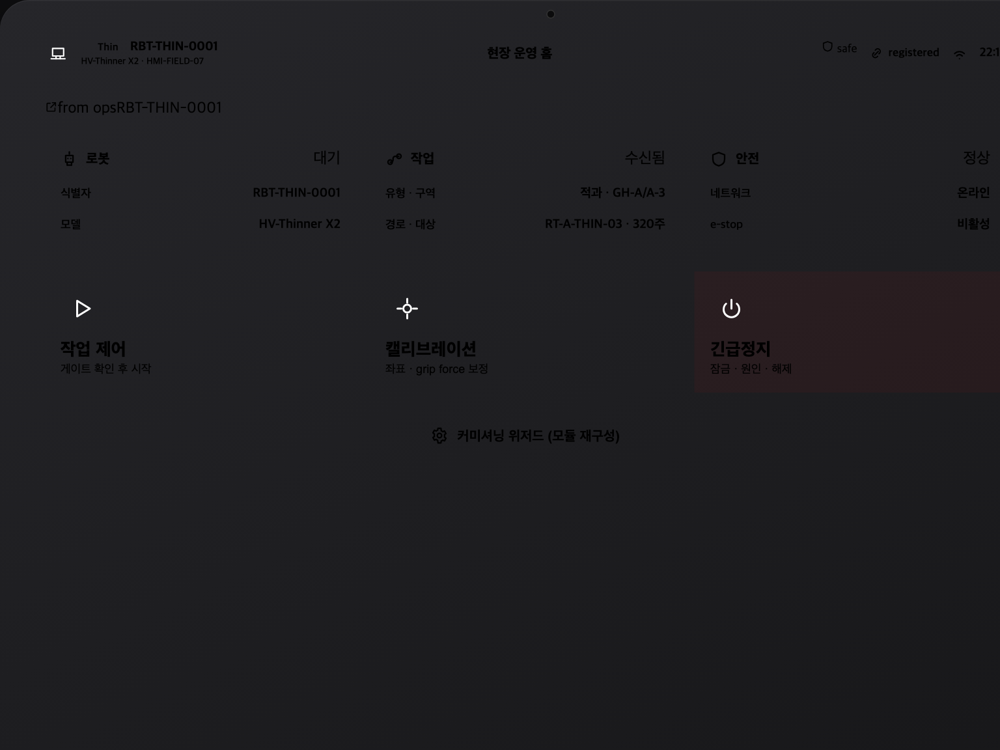
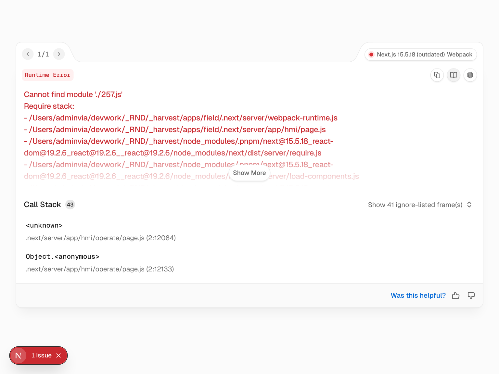
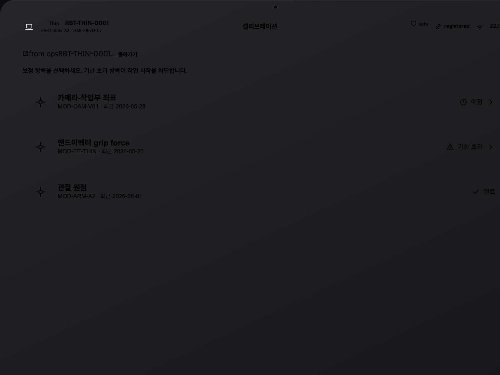

🌱
S5 · 현장
조합 로봇 현장 운용
관제에서 조립·배정된 로봇을 현장에서 태블릿 HMI로 운용한다. 작업을 시작하기 전에 — 모든 이음(경로·버전·캘리브·안전)이 맞는지 한 화면에서 최종 확인한다. 이기종 모듈로 조립된 로봇이라도, 오퍼레이터에게는 하나의 작업 흐름으로만 보인다.
1
작업 패키지 수신
관제(S4)에서 전송된 작업이 태블릿에 도착한다. 어디서 온 작업인지 출처 칩(from Ops · RBT-…)으로 분명히 표시돼, 현장과 관제가 같은 세션 컨텍스트를 공유한다.
관제 작업→
ctx 핸드오프 (robot_id·work_session_id)→
현장 태블릿
⌂ Field · HMI 홈 허브 (JJ-U01)

2
시작 전 Gate Check
작업을 시작하기 전, 경로검증(G1)·펌웨어 버전(G3)·캘리브레이션(G4)·장애 freeze(G7) 4종 게이트를 일괄 표시한다. 모든 게이트가 통과해야만 시작 가능 상태가 된다.
작업 패키지→
Gate (자동 호환검증)→
시작 가능 여부
⛉ Field · Gate Check (G1·G3·G4·G7)

3
필수 캘리브레이션 수행
단계형 위저드를 따라 엔드이펙터(KIRO/농과원) 캘리브레이션을 수행하고, hold로 저장한다. 저장 시
calibration_profile_id가 생성돼 작업 준비가 완료된다.
엔드이펙터→
Calibration Profile (calibration_profile_id)→
작업 준비 완료
◎ Field · Calibration Wizard (G4)

4
hold-to-confirm 작업 시작
위험 액션은 길게 눌러(hold-to-confirm) 실행한다. 실수 클릭을 막고, 누가 언제 무엇을 시작했는지 Audit 고지가 함께 남는다.
시작 액션→
hold-to-confirm + Audit→
작업 개시
⏻ Field · hold-to-confirm 시작
5
자율 적과/적심 진행
로봇이 자율적으로 적과·적심 작업을 진행한다. 진행률·다음 행동이 화면 상단에 고정 표시돼, 오퍼레이터는 한눈에 상황을 파악한다.
자율 작업→
진행률·다음 행동 고정 표시→
현장 모니터링
▶ Field · 자율 적과/적심 진행
6
일시정지 / 재개
작업 중 언제든 일시정지·재개가 가능하다. 위험 전이마다 hold를 요구해, 정지·재개가 의도된 동작임을 보장한다.
일시정지·재개→
위험 전이마다 hold→
안전한 상태 전이
⏸ Field · 일시정지 / 재개

CONFIRM G3 — 파라미터 버전 불일치
G3 parameter 버전 불일치(
p11 ≠ p12) → confirm_required. 시작 전 게이트에서 버전 차이가 감지되면 확인을 요구한다.해결: 파라미터를 동기화한 뒤 진행한다. (G4 캘리브 미완은 blocked로 시작 자체가 차단된다.)
→
작업 중 문제가 발생하면 — S6 · 이기종 가로지르는 문제 추적·개선으로 이어진다.